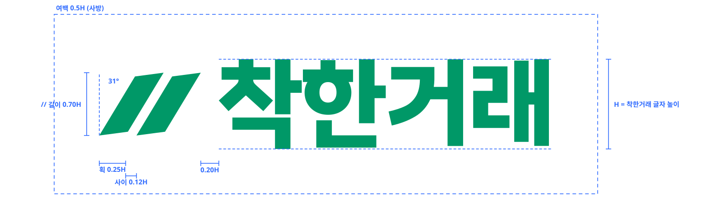
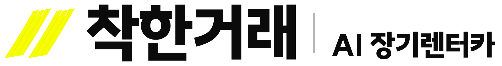

착한거래 CI 규정
// 는 잠시 멈춤이다 — 「거래하기 전에 잠깐 멈추고, 꼼꼼히 확인하자」. 착한거래는 그 확인을 대신 해 주는 AI다.
로고는 착한 초록 한 색(// 와 글씨가 같은 색)이다. 원본은 모두 SVG(글자를 윤곽선으로 바꾼 벡터)라 크기를 바꿔도 모양·비율이 그대로다. 정리: 2026-11-17 대표 확정.
1. 기본형 chakhan-ci-on-light / on-dark / on-green.svg
 흰·밝은 바탕 #009867
흰·밝은 바탕 #009867 검정·어두운 바탕 #38CA91
검정·어두운 바탕 #38CA91 초록 바탕(반전) 흰색
초록 바탕(반전) 흰색| 바탕 | 로고 (// · 착한거래 · 카테고리) |
|---|---|
| 흰·밝은 바탕 (기본) | 착한 초록 #009867 |
| 검정·어두운 바탕 (쇼츠·다크 모드) | 검정 바탕용 초록 #38CA91 |
| 착한 초록 바탕 (반전) | 흰색 |
| 한 색만 되는 곳 (도장·각인·팩스·흑백 인쇄) | 검정 (단색판) |
2. 색 착한 초록 짝꿍
착한 초록 (기준색)
HEX #009867 · RGB 0 152 103
흰 바탕 · 인쇄 · 버튼
착한 초록 · 검정 바탕용
HEX #38CA91 · RGB 56 202 145
검정 바탕 · 쇼츠 · 다크 모드
잉크
HEX #0B0B0C
본문 글씨 · 검정 바탕
흰색
HEX #FFFFFF
흰 바탕 · 초록 바탕 위 글씨
왜 두 톤인가 (수치 근거) — 초록은 한 색으로 흰 바탕과 검정 바탕을 동시에 잘 보이게 할 수 없다(흰 바탕은 진해야, 검정 바탕은 밝아야 함). 같은 색상(약 162°)에서 밝기만 바탕에 맞췄다.
| 흰 바탕 APCA Lc | 검정 바탕 APCA Lc | WCAG 2 대비 | |
|---|---|---|---|
| #009867 (흰 바탕용) | 63.9 | — | 3.69 : 1 |
| #38CA91 (검정 바탕용) | — | 61.6 | 9.39 : 1 |
| 참고: 한 색 #00AD72 | 54.8 | 46.9 | 2.91 / 6.76 |
APCA(WCAG 3 초안): Lc 45 = 큰 글씨 최소, 60 = 본문 수준, 75 = 권장. 네이버(#03C75A)·라인·스포티파이·하나은행·배민과 OKLab 색 거리를 따로 확인했다(흰 바탕용은 가장 가까운 하나은행과 8.0). 법적 상표 검토는 아니다.
- 초록을 다른 초록(연두·민트·청록)으로 바꿔 칠하지 않는다. 흰 바탕에 검정 바탕용 #38CA91 을 쓰지 않는다(흐려진다).
- 작은 글씨·링크에 초록을 쓸 때는 더 진한 단계(#088A58 이하)를 쓴다 — 기준색은 큰 글씨·로고·버튼용.
- 인쇄용 별색(Pantone)·CMYK는 시험 인쇄 후 확정한다(아직 확정값 없음).
3. 비율 H = 「착한거래」 글자 높이

| 항목 | 값 |
|---|---|
| // 길이 · 위치 | 한 획 세로 0.70H, 글자 세로 가운데 (2026-11-17 대표 확정 — 사선보다 「마크」로 서게). 둘째 획은 획 방향으로 0.14H 위 (2026-11-18) |
| // 기울기 | 세로에서 오른쪽으로 31° |
| // 획 굵기 · 두 획 사이 | 0.25H(획에 직각) · 0.12H(가로) |
| // 끝 | 형광펜 막대 — 양 끝을 획 방향에 직각으로 자른다. 두 획의 바닥을 수평으로 맞추지 않고 계단처럼 엇갈린다 (2026-11-18 대표 지시). 단색, 그림자·갈라짐·결 없음 |
| // ↔ 글자 | 0.20H |
| 글꼴 | SUITE Heavy (윤곽선으로 넣어 글꼴 없이도 같다) |
| 여백 | 로고 잉크 상자 둘레 0.5H 안에는 아무것도 두지 않는다 |
| 최소 크기(화면) | 기본형 높이 24px · 카테고리형 28px · 심볼 32px. 그보다 작으면 심볼만 쓴다 |
4. 카테고리 CI | 카테고리
착한거래 아래의 서비스(AI 장기렌터카)와 마케팅 콘텐츠 시리즈(상식 한 스푼 …)는 CI 오른쪽에 세로줄을 두고 쓴다.

ai-rentcar-on-light ai-rentcar-on-dark
ai-rentcar-on-dark ai-rentcar-on-green
ai-rentcar-on-green sangsik-on-light
sangsik-on-light sangsik-on-dark
sangsik-on-dark
sangsik-on-green- 카테고리도 로고와 같은 한 색. 글꼴은 SUITE Heavy, 크기는 「착한거래」 글자의 0.47배, 바닥선(기준선)을 맞춘다.
- 워드마크 → 세로줄 → 카테고리 간격은 각 0.30H. 세로줄은 굵기 0.035H · 길이 0.70H, 로고색 35~50%.
- 새 카테고리는
build_ci.py의CATEGORIES에 더해 다시 만든다. 영상·웹에서 직접 쓸 때는chakhan-ci-spec.json의 위치·크기·색을 따른다.
5. 심볼 chakhan-symbol-*.svg
앱 아이콘·유튜브 채널·카카오톡 프로필처럼 작은 정사각·원형 자리에는 // 만 쓴다. 기본은 착한 초록 바탕에 흰 //.
 검정 바탕 · 초록 //
검정 바탕 · 초록 // 흰 바탕 · 초록 //
흰 바탕 · 초록 //6. 확인 표시(형광펜) 효과 로고가 아닌 움직임·화면 효과
AI가 「꼭 볼 곳」을 짚을 때 글자 아래쪽 45%에 연한 초록을 왼→오로 칠한다. 로고에는 넣지 않는다.
단, 차량 손상 시 수리비를 차감한다.
흰 바탕 효과 #B5F1D2제9조 중도 해지 시 위약금이 발생한다.
검정 바탕 효과 #0755397. 하지 않는 것
늘리거나 찌그러뜨리기다른 색으로 칠하기흰 바탕에 검정 바탕용 초록검정 바탕에 흰 바탕용 초록- // 와 글씨를 다른 색으로 나누기, // 만 크게·작게 바꾸기, // 와 글자 사이를 떼거나 붙이기, 돌리거나 기울이기.
- 다른 글꼴로 다시 쓰기, 그림자·외곽선·그라데이션·광택 같은 효과 넣기.
- 사진 위에 바로 올려 묻히게 두기 — 어두운 사진은 검정 바탕형, 밝은 사진은 흰 바탕형, 대비가 약하면 단색 띠를 깐다.
8. 파일
| 파일 | 쓰임 |
|---|---|
chakhan-ci-on-light/dark/green.svg | 기본형 (흰·검정·초록 바탕) |
chakhan-ci-<카테고리>-on-light/dark/green.svg | 카테고리형 (ai-rentcar, sangsik) |
chakhan-symbol-on-green/dark/light.svg | 심볼 (앱 아이콘·프로필) |
chakhan-ci-mono-black.svg | 단색 (한 색만 되는 곳) |
chakhan-ci-spec.json | 영상·웹이 따르는 비율·색 기준값 |
build_ci.py | 모든 SVG·기준값·비율 도면을 고정 수식으로 다시 만든다 |
export_png.py | PNG(로고 1200·2400px 폭, 심볼 512·1024px, 바탕 투명)를 D:/dev-artifacts/ai-staff/chakhan-ci-png/에 만든다. PNG는 git에 넣지 않는다 |